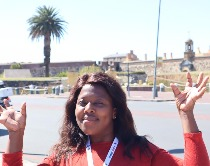
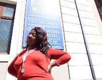

Bonisiwe Bonny
Cukatha
Which city?
There are so many reasons that intrigues me to Carlifonia,"The Golden State" as its called by many.The beauty,fun,the adventure and most importantly for me;the cutting edge technology.Speaking of technology,Carlifonia is home to the most used,most popular social media-Facebook.It is also home to multinational technology company-Google.Entertainment-Carlifonia is the "mother of entertainment",it houses the mother of the entertainment industry "Hollywood".Now tell me;who would'nt want to visit this amazing city? mmmmh 😜"
Swahili is very useful if you`re working broadly across East Africa, won`t be settled in one place,and will need to communicate with a variety of people across national and ethnic lines.
| English Phrase | Swahili Phrase |
|---|---|
| I like to learn new stuff | Ninapenda kujifunza vitu vipya |
| We need to plough back to our communities | Tunahitaji kulima kurudi kwenye jamil zetu |
| Learn from your mistakes | Jifunze kutukana na makosa yako |
Historic places
City Hall

The building was designed as the result of a public competition, the winning architects
being
Messrs Harry Austin Reid and Frederick George Green, with the contractors being Messrs
T.
Howard and F. G. Scott. Much of the building material, including fixtures and fittings
was
imported from Europe.
On February 11, 1990, only hours after his release from prison, Nelson Mandela made his
first public speech from the balcony of Cape Town City Hall.
The City Hall's carillon was installed as a World War I war memorial, with 22 additional
bells being added in 1925 with the visit of the Prince of Wales.
Castle of Good Hope
During the Second Boer War (1899–1902), part of the castle was used as a prison, and the
former cells remain to this day.
It is considered the best preserved example of a 17th century architectural structure in
the
entire world.
The Castle of Good Hope is the oldest existing colonial building in South Africa.
District Six Museum
Visitors learn about this once colourful hub for musicians, artists, and ‘good’ and ‘bad’ gangsters, that faced a 20-year long period of demolition and forced removals during the apartheid era. Prior to its current purpose, it was a wine shop until the Methodists took it over in 1883 and founded the Buitenkamp Methodist Mission Church. Currently, the museum serves as a remembrance of the once lively multi-racial area that was forcefully removed during apartheid in the 1960s and 1970s.
2021 © CopyrightsReserved @B.Cukatha